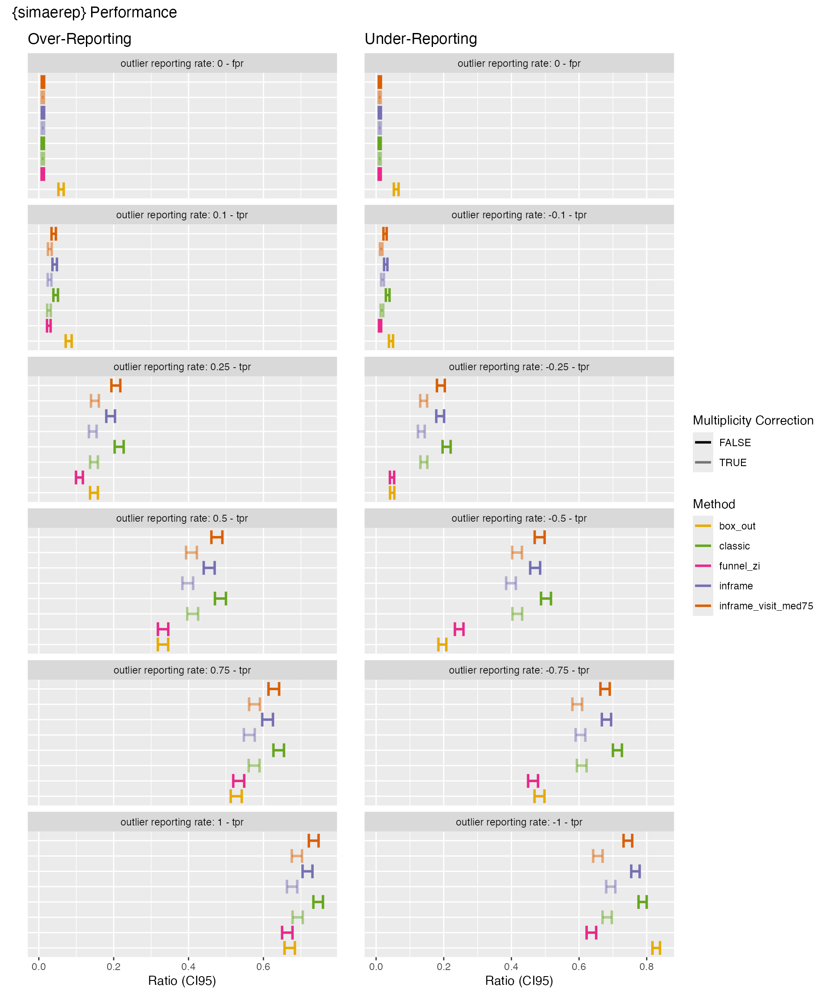

Load
suppressPackageStartupMessages(library(dplyr))
suppressPackageStartupMessages(library(tibble))
suppressPackageStartupMessages(library(tidyr))
suppressPackageStartupMessages(library(simaerep))
suppressPackageStartupMessages(library(purrr))
suppressPackageStartupMessages(library(furrr))
suppressPackageStartupMessages(library(stringr))
suppressPackageStartupMessages(library(patchwork))Introduction
{simaerep} calculates site-specific event reporting probabilities based on bootstrap simulations that replace individual patients with other patients from the same study that have at least the same number of visits. This makes it ideal for monitoring event reporting of ongoing trials in which not all sites and patients are starting in the trial at the same time and in which the event rates are not constant over the entire treatment cycle.
The statistical performance of {simaerep} is thus best measured against a data set that includes ongoing studies in different stages and non-constant event rates. For this we use a snapshot of our portfolio data to simulate a test data set from which we subsequently remove or add a specific percentage of events to create over- and under-reporting scenarios. We will then measure statistical performance of {simaerep} and compare it to those of other statistical methods.
We have previously evaluated {simaerep} for detecting adverse events under-reporting in a joint industry publication using a similar approach.
Koneswarakantha, B., Adyanthaya, R., Emerson, J. et al. An Open-Source R Package for Detection of Adverse Events Under-Reporting in Clinical Trials: Implementation and Validation by the IMPALA (Inter coMPany quALity Analytics) Consortium. Ther Innov Regul Sci 58, 591–599 (2024). https://doi.org/10.1007/s43441-024-00631-8
Test Data
Portfolio Configuration and Event Rates
The portfolio configuration will be used to generate compliant test data that is similar to a realistic portfolio of studies in which all sites are compliant. We will subsequently remove a percentage of AEs from each study site and calculate AE under-reporting statistics to calculate overall detection thresholds. The portfolio configuration should give a minimal description of the portfolio without violating data privacy laws or competitive intellectual property. We propose to include the following metrics into the portfolio configuration:
site parameters:
- mean of all maximum patient visits
- sd of of all maximum patient visits
- total number patients
study parameters:
- mean AE per visit
The information contained in a portfolio configuration is very scarce and thus can be shared more easily within the industry. We can use those parameters to simulate test data for assessing {simaerep} performance on a given portfolio.
We start with our standard input data set df_visit from which we
extract the portfolio configuration and the event rates using
simaerep::get_portf_config and
simaerep::get_portf_event_rates:
This workflow will automatically:
- remove patients with 0 visits
- minimum number of patients per study
- minimum number of sites per study
- anonymize study and site IDs
df_visit1 <- sim_test_data_study(
n_pat = 100,
n_sites = 10,
ratio_out = 0.4,
factor_event_rate = - 0.6,
event_rates = c(0.3, 1, 0.7, 0.1),
study_id = "A"
)
df_visit2 <- sim_test_data_study(
n_pat = 100,
n_sites = 10,
ratio_out = 0.2,
factor_event_rate = - 0.1,
event_rates = c(1, 0.5, 0.3, 0.3),
study_id = "B"
)
df_visit <- bind_rows(df_visit1, df_visit2)
df_config <- simaerep::get_portf_config(
df_visit,
anonymize = TRUE,
min_pat_per_study = 100,
min_sites_per_study = 10
)
df_config %>%
head(25) %>%
knitr::kable()| study_id | event_per_visit_mean | site_id | max_visit_sd | max_visit_mean | n_pat |
|---|---|---|---|---|---|
| 0001 | 0.1517349 | 0001 | 4.175324 | 19.1 | 10 |
| 0001 | 0.1517349 | 0002 | 5.108816 | 18.1 | 10 |
| 0001 | 0.1517349 | 0003 | 3.011091 | 18.8 | 10 |
| 0001 | 0.1517349 | 0004 | 3.366502 | 18.0 | 10 |
| 0001 | 0.1517349 | 0005 | 3.831159 | 18.7 | 10 |
| 0001 | 0.1517349 | 0006 | 2.708013 | 19.0 | 10 |
| 0001 | 0.1517349 | 0007 | 1.885618 | 20.0 | 10 |
| 0001 | 0.1517349 | 0008 | 3.333333 | 20.0 | 10 |
| 0001 | 0.1517349 | 0009 | 3.765339 | 22.2 | 10 |
| 0001 | 0.1517349 | 0010 | 2.898275 | 19.2 | 10 |
| 0002 | 0.3070175 | 0001 | 4.237400 | 17.8 | 10 |
| 0002 | 0.3070175 | 0002 | 3.622461 | 19.3 | 10 |
| 0002 | 0.3070175 | 0003 | 3.272783 | 18.6 | 10 |
| 0002 | 0.3070175 | 0004 | 4.648775 | 20.5 | 10 |
| 0002 | 0.3070175 | 0005 | 3.368152 | 20.3 | 10 |
| 0002 | 0.3070175 | 0006 | 4.083844 | 20.3 | 10 |
| 0002 | 0.3070175 | 0007 | 4.900113 | 19.3 | 10 |
| 0002 | 0.3070175 | 0008 | 3.622461 | 20.3 | 10 |
| 0002 | 0.3070175 | 0009 | 3.604010 | 17.9 | 10 |
| 0002 | 0.3070175 | 0010 | 3.308239 | 19.5 | 10 |
df_event_rates <- simaerep::get_portf_event_rates(df_visit)
df_event_rates %>%
filter(dense_rank(study_id) == 1) %>%
knitr::kable()| study_id | visit | event_rate | n_pat |
|---|---|---|---|
| 0001 | 1 | 0.0000000 | 100 |
| 0001 | 2 | 0.8400000 | 100 |
| 0001 | 3 | 0.6100000 | 100 |
| 0001 | 4 | 0.1000000 | 100 |
| 0001 | 5 | 0.0700000 | 100 |
| 0001 | 6 | 0.0606061 | 99 |
| 0001 | 7 | 0.0707071 | 99 |
| 0001 | 8 | 0.0606061 | 99 |
| 0001 | 9 | 0.0909091 | 99 |
| 0001 | 10 | 0.0909091 | 99 |
| 0001 | 11 | 0.1111111 | 99 |
| 0001 | 12 | 0.0909091 | 99 |
| 0001 | 13 | 0.0927835 | 97 |
| 0001 | 14 | 0.0729167 | 96 |
| 0001 | 15 | 0.0659341 | 91 |
| 0001 | 16 | 0.0114943 | 87 |
| 0001 | 17 | 0.1250000 | 80 |
| 0001 | 18 | 0.0694444 | 72 |
| 0001 | 19 | 0.0476190 | 63 |
| 0001 | 20 | 0.1224490 | 49 |
| 0001 | 21 | 0.0500000 | 40 |
| 0001 | 22 | 0.0384615 | 26 |
| 0001 | 23 | 0.0666667 | 15 |
| 0001 | 24 | 0.0000000 | 12 |
| 0001 | 25 | 0.2857143 | 7 |
| 0001 | 26 | 0.0000000 | 3 |
The configuration and the event rates can be used to simulate a new
set of portfolio data with
simaerep::sim_test_data_portfolio
simaerep::sim_test_data_portfolio(df_config, df_event_rates, progress = TRUE)## # A tibble: 3,751 × 8
## study_id event_per_visit_mean site_id max_visit_sd max_visit_mean patient_id
## <chr> <dbl> <chr> <dbl> <dbl> <chr>
## 1 0001 0.152 0001 4.18 19.1 0001
## 2 0001 0.152 0001 4.18 19.1 0001
## 3 0001 0.152 0001 4.18 19.1 0001
## 4 0001 0.152 0001 4.18 19.1 0001
## 5 0001 0.152 0001 4.18 19.1 0001
## 6 0001 0.152 0001 4.18 19.1 0001
## 7 0001 0.152 0001 4.18 19.1 0001
## 8 0001 0.152 0001 4.18 19.1 0001
## 9 0001 0.152 0001 4.18 19.1 0001
## 10 0001 0.152 0001 4.18 19.1 0001
## # ℹ 3,741 more rows
## # ℹ 2 more variables: visit <int>, n_event <dbl>Load Portfolio
To simulate a realistic test set with ongoing studies we load
snapshots from our portfolio. We can use future package to
set the number of workers for parallel processing.
df_config <- readr::read_csv("ae_conf_20240220.csv") %>%
rename_with(~stringr::str_replace(., "ae_", "event_")) %>%
rename(site_id = site_number)
df_event_rates <- readr::read_csv("ae_rates_20240220.csv") %>%
rename_with(~stringr::str_replace(., "ae_", "event_")) %>%
rename(visit = cum_visit)
suppressPackageStartupMessages(library(furrr))
plan(multisession, workers = 6)
df_portf <- sim_test_data_portfolio(
df_config,
df_event_rates,
progress = TRUE,
parallel = TRUE
)
plan(sequential)Simulating Reporting Outlier
Next we will write a function that uses simaerep and other statistical methods to detect reporting outlier. We will apply the following.
- remove or add events directly from the data set and not from an
aggregated metric using
simaerep::sim_out() - set threshold for confusion matrix so that all methods have similar fpr
- test the following {simaerep} parameters:
- classic algorithm
- inframe algorithm with visit_med75
- inframe algorithm
- inframe algorithm w/o multiplicity correction
- test the following outlier detection methods
- box-plot
- funnel-plot Zink et al. 2018
Functions
funnel <- function(df) {
df %>%
filter(visit == max(visit), .by = "patient_id") %>%
summarise(
Metric = sum(.data$n_event) / sum(.data$visit),
n_event = sum(n_event),
visit = sum(visit),
.by = "site_id"
) %>%
mutate(
vMu = sum(.data$n_event) / sum(.data$visit),
z_0 = ifelse(.data$vMu == 0,
0,
(.data$Metric - .data$vMu) /
sqrt(.data$vMu / .data$visit)
),
phi = mean(.data$z_0^2),
z_i = ifelse(.data$vMu == 0 | .data$phi == 0,
0,
(.data$Metric - .data$vMu) /
sqrt(.data$phi * .data$vMu / .data$visit)
)
)
}
box <- function(df) {
df <- df %>%
filter(visit == max(visit), .by = "patient_id") %>%
summarise(
event_per_visit = sum(.data$n_event) / sum(.data$visit),
.by = "site_id"
)
bx <- boxplot.stats(df$event_per_visit)
df <- df %>%
mutate(
box_out = event_per_visit < bx$stats[1] | event_per_visit > bx$stats[5]
)
}
perf <- function(df_visit, study_id, site_id, factor_event) {
df_vs_study <- df_visit %>%
simaerep::sim_out(study_id, site_id, factor_event)
remove(df_visit)
df_classic <- df_vs_study %>%
simaerep(inframe = FALSE, progress = FALSE, check = FALSE) %>%
.$df_eval %>%
filter(.data$site_id == .env$site_id)
df_inframe <- df_vs_study %>%
simaerep(check = FALSE, progress = FALSE) %>%
.$df_eval %>%
filter(.data$site_id == .env$site_id)
df_inframe_visit_med75 <- df_vs_study %>%
simaerep(visit_med75 = TRUE, check = FALSE, progress = FALSE) %>%
.$df_eval %>%
filter(.data$site_id == .env$site_id)
funnel_zi <- funnel(df_vs_study) %>%
filter(.data$site_id == .env$site_id) %>%
pull(z_i)
box_out <- box(df_vs_study) %>%
filter(.data$site_id == .env$site_id) %>%
pull(box_out)
df <- tibble(
score_classic = df_classic$prob,
score_classic_no_mult = df_classic$prob_no_mult,
score_inframe = df_inframe$event_prob,
score_inframe_no_mult = df_inframe$event_prob_no_mult,
score_inframe_visit_med75 = df_inframe_visit_med75$event_prob,
score_inframe_visit_med75_no_mult = df_inframe_visit_med75$event_prob_no_mult,
score_funnel_zi = funnel_zi,
score_box_out = as.integer(box_out),
stat_classic_visit_med75 = df_classic$visit_med75,
stat_classic_n_pat_with_med75 = df_classic$n_pat_with_med75,
stat_classic_mean_event_site_med75 = df_classic$mean_event_site_med75,
stat_classic_mean_event_study_med75 = df_classic$mean_event_study_med75,
stat_inframe_visit_med75 = df_inframe_visit_med75$visit_med75,
stat_inframe_visit_med75_n_pat_with_med75 = df_inframe_visit_med75$n_pat_with_med75,
stat_inframe_visit_med75_events_per_visit_site = df_inframe_visit_med75$event_per_visit_site,
stat_inframe_visit_med75_events_per_visit_study = df_inframe_visit_med75$event_per_visit_site,
stat_inframe_n_pat = df_inframe$n_pat,
stat_inframe_events_per_visit_site = df_inframe$event_per_visit_site,
stat_inframe_events_per_visit_study = df_inframe$event_per_visit_study,
)
if (! any(str_detect(colnames(df), "no_mult"))) {
stop("no scores w/o multiplicity correction available")
}
return(df)
}
# 50% over-reporting
perf(df_portf, study_id = "0010", site_id = "15153", factor_event = 0.5) %>% unlist()## score_classic
## 0.8045000
## score_classic_no_mult
## 0.9970000
## score_inframe
## 0.1950000
## score_inframe_no_mult
## 0.9840000
## score_inframe_visit_med75
## 0.6243333
## score_inframe_visit_med75_no_mult
## 0.9940000
## score_funnel_zi
## 2.1931127
## score_box_out
## 0.0000000
## stat_classic_visit_med75.80%
## 7.0000000
## stat_classic_n_pat_with_med75
## 5.0000000
## stat_classic_mean_event_site_med75
## 3.9000000
## stat_classic_mean_event_study_med75
## 2.0576324
## stat_inframe_visit_med75.80%
## 7.0000000
## stat_inframe_visit_med75_n_pat_with_med75
## 5.0000000
## stat_inframe_visit_med75_events_per_visit_site
## 0.5571429
## stat_inframe_visit_med75_events_per_visit_study
## 0.5571429
## stat_inframe_n_pat
## 9.0000000
## stat_inframe_events_per_visit_site
## 0.4615385
## stat_inframe_events_per_visit_study
## 0.2937692
# 50% under-reporting
perf(df_portf, study_id = "0010", site_id = "15153", factor_event = - 0.5) %>% unlist()## score_classic
## -0.03400000
## score_classic_no_mult
## -0.99400000
## score_inframe
## -0.27550000
## score_inframe_no_mult
## -0.98000000
## score_inframe_visit_med75
## -0.83900000
## score_inframe_visit_med75_no_mult
## -0.99900000
## score_funnel_zi
## -2.24765772
## score_box_out
## 0.00000000
## stat_classic_visit_med75.80%
## 7.00000000
## stat_classic_n_pat_with_med75
## 5.00000000
## stat_classic_mean_event_site_med75
## 0.50000000
## stat_classic_mean_event_study_med75
## 2.05763240
## stat_inframe_visit_med75.80%
## 7.00000000
## stat_inframe_visit_med75_n_pat_with_med75
## 5.00000000
## stat_inframe_visit_med75_events_per_visit_site
## 0.07142857
## stat_inframe_visit_med75_events_per_visit_study
## 0.07142857
## stat_inframe_n_pat
## 9.00000000
## stat_inframe_events_per_visit_site
## 0.15384615
## stat_inframe_events_per_visit_study
## 0.29052308Grid
df_grid <- df_portf %>%
distinct(study_id, site_id) %>%
# to reduce calculation time we only take every xth study
filter(dense_rank(study_id)%%5 == 0) %>%
mutate(factor_event = list(c( -1, -.75, -.5, -.25, -.1, 0, 0.1, 0.25, 0.5, 0.75, 1))) %>%
unnest(factor_event)
df_grid## # A tibble: 49,720 × 3
## study_id site_id factor_event
## <chr> <chr> <dbl>
## 1 0005 4480 -1
## 2 0005 4480 -0.75
## 3 0005 4480 -0.5
## 4 0005 4480 -0.25
## 5 0005 4480 -0.1
## 6 0005 4480 0
## 7 0005 4480 0.1
## 8 0005 4480 0.25
## 9 0005 4480 0.5
## 10 0005 4480 0.75
## # ℹ 49,710 more rowsApply
Again we use the furrr and the future
package for parallel processing. simaerep::purrr_bar is a
wrapper around furrr functions that enables the
progressr package to display a progress bar.
plan(multisession, workers = 6)
progressr::with_progress(
df_perf <- df_grid %>%
mutate(
perf = simaerep::purrr_bar(
list(study_id, site_id, factor_event),
.purrr = furrr::future_pmap,
.f = function(x, y, z) perf(df_portf, x, y, z),
.purrr_args = list(.options = furrr_options(seed = TRUE)),
.steps = nrow(.)
)
)
)
plan(sequential)
df_perf %>%
unnest(perf) %>%
readr::write_csv("perf.csv")
df_perf <- readr::read_csv("perf.csv", show_col_types = FALSE)
df_perf_long <- df_perf %>%
pivot_longer(cols = - c(study_id, site_id, factor_event), names_to = "type", values_to = "score") %>%
filter(startsWith(type, "score_")) %>%
mutate(
type = stringr::str_replace(type, "score_", ""),
# we use the same cut-off for over- and under-reporting
score = abs(score)
)Evaluation
Thresholds
We set the thresholds so that we get a fpr of 0.01.
Note that this results in probability thresholds ~ 0.99 for scores w/o multiplicity correction and in the recommended funnel plot score threshold of -2.
target_fpr <- 0.01
df_thresh <- df_perf_long %>%
group_by(type) %>%
nest() %>%
ungroup() %>%
mutate(
data = map(data, ~ filter(., factor_event == 0)),
thresh = map_dbl(data, ~ quantile(pull(., score), 1 - target_fpr)),
) %>%
select(type, thresh)
df_thresh## # A tibble: 8 × 2
## type thresh
## <chr> <dbl>
## 1 classic 0.849
## 2 classic_no_mult 0.995
## 3 inframe 0.849
## 4 inframe_no_mult 0.996
## 5 inframe_visit_med75 0.848
## 6 inframe_visit_med75_no_mult 0.996
## 7 funnel_zi 2.70
## 8 box_out 1Aggregate
get_prop_test_ci95 <- function(..., ix) {
stopifnot(ix %in% c(1, 2))
tryCatch(
prop.test(...)$conf.int[ix],
error = function(cnd) c(NA, NA)[ix]
)
}
df_aggr <- df_perf_long %>%
left_join(df_thresh, by = "type") %>%
mutate(
is_out = score >= thresh,
is_out = ifelse(type == "box_out", score == 1, is_out)
) %>%
summarise(
n = n(),
.by = c(type, factor_event, is_out)
) %>%
pivot_wider(
names_from = is_out,
values_from = n,
names_prefix = "is_out_",
values_fill = 0
) %>%
mutate(
n_sites = is_out_TRUE + is_out_FALSE,
ratio = is_out_TRUE / n_sites,
ratio_type = ifelse(factor_event == 0, "fpr", "tpr"),
ci95_low = map2_dbl(is_out_TRUE, n_sites, ~ get_prop_test_ci95(.x, .y, ix = 1)),
ci95_high = map2_dbl(is_out_TRUE, n_sites, ~ get_prop_test_ci95(.x, .y, ix = 2)),
type_strip = str_replace(type, "_no_mult", ""),
has_mult = ! str_detect(type, "no_mult") & ! type %in% c("funnel_zi", "box_out")
)Table
Methods:
- classic: classic algorithm
- inframe: new algorithm using table operations
- inframe w/o multiplicity correction: new algorithm using table operations without multiplicity corrections
- inframe visit_med75: new algorithm using table operations and visit_med75
- funnel_zi: funnel plot derived outlier detection
- box_out: box plot derived outlier detection
FN: false negatives TP: true positives
df_aggr %>%
select(method = type_strip, has_mult, factor_event, FN = is_out_FALSE, TP = is_out_TRUE, n_sites, ratio_type, ratio, ci95_low, ci95_high) %>%
knitr::kable(digits = 4)| method | has_mult | factor_event | FN | TP | n_sites | ratio_type | ratio | ci95_low | ci95_high |
|---|---|---|---|---|---|---|---|---|---|
| classic | TRUE | -1.00 | 1432 | 3088 | 4520 | tpr | 0.6832 | 0.6694 | 0.6967 |
| classic | FALSE | -1.00 | 958 | 3562 | 4520 | tpr | 0.7881 | 0.7758 | 0.7998 |
| inframe | TRUE | -1.00 | 1384 | 3136 | 4520 | tpr | 0.6938 | 0.6801 | 0.7072 |
| inframe | FALSE | -1.00 | 1054 | 3466 | 4520 | tpr | 0.7668 | 0.7542 | 0.7790 |
| inframe_visit_med75 | TRUE | -1.00 | 1556 | 2964 | 4520 | tpr | 0.6558 | 0.6417 | 0.6696 |
| inframe_visit_med75 | FALSE | -1.00 | 1155 | 3365 | 4520 | tpr | 0.7445 | 0.7314 | 0.7571 |
| funnel_zi | FALSE | -1.00 | 1643 | 2877 | 4520 | tpr | 0.6365 | 0.6223 | 0.6505 |
| box_out | FALSE | -1.00 | 776 | 3744 | 4520 | tpr | 0.8283 | 0.8169 | 0.8391 |
| classic | TRUE | -0.75 | 1772 | 2748 | 4520 | tpr | 0.6080 | 0.5935 | 0.6222 |
| classic | FALSE | -0.75 | 1295 | 3225 | 4520 | tpr | 0.7135 | 0.7000 | 0.7266 |
| inframe | TRUE | -0.75 | 1789 | 2731 | 4520 | tpr | 0.6042 | 0.5898 | 0.6185 |
| inframe | FALSE | -0.75 | 1441 | 3079 | 4520 | tpr | 0.6812 | 0.6673 | 0.6947 |
| inframe_visit_med75 | TRUE | -0.75 | 1832 | 2688 | 4520 | tpr | 0.5947 | 0.5802 | 0.6090 |
| inframe_visit_med75 | FALSE | -0.75 | 1460 | 3060 | 4520 | tpr | 0.6770 | 0.6631 | 0.6906 |
| funnel_zi | FALSE | -0.75 | 2423 | 2097 | 4520 | tpr | 0.4639 | 0.4493 | 0.4786 |
| box_out | FALSE | -0.75 | 2337 | 2183 | 4520 | tpr | 0.4830 | 0.4683 | 0.4977 |
| classic | TRUE | -0.50 | 2634 | 1886 | 4520 | tpr | 0.4173 | 0.4028 | 0.4318 |
| classic | FALSE | -0.50 | 2250 | 2270 | 4520 | tpr | 0.5022 | 0.4875 | 0.5169 |
| inframe | TRUE | -0.50 | 2718 | 1802 | 4520 | tpr | 0.3987 | 0.3844 | 0.4131 |
| inframe | FALSE | -0.50 | 2395 | 2125 | 4520 | tpr | 0.4701 | 0.4555 | 0.4848 |
| inframe_visit_med75 | TRUE | -0.50 | 2637 | 1883 | 4520 | tpr | 0.4166 | 0.4022 | 0.4311 |
| inframe_visit_med75 | FALSE | -0.50 | 2335 | 2185 | 4520 | tpr | 0.4834 | 0.4687 | 0.4981 |
| funnel_zi | FALSE | -0.50 | 3411 | 1109 | 4520 | tpr | 0.2454 | 0.2329 | 0.2582 |
| box_out | FALSE | -0.50 | 3636 | 884 | 4520 | tpr | 0.1956 | 0.1842 | 0.2075 |
| classic | TRUE | -0.25 | 3883 | 637 | 4520 | tpr | 0.1409 | 0.1310 | 0.1515 |
| classic | FALSE | -0.25 | 3579 | 941 | 4520 | tpr | 0.2082 | 0.1965 | 0.2204 |
| inframe | TRUE | -0.25 | 3917 | 603 | 4520 | tpr | 0.1334 | 0.1237 | 0.1437 |
| inframe | FALSE | -0.25 | 3665 | 855 | 4520 | tpr | 0.1892 | 0.1779 | 0.2010 |
| inframe_visit_med75 | TRUE | -0.25 | 3886 | 634 | 4520 | tpr | 0.1403 | 0.1303 | 0.1508 |
| inframe_visit_med75 | FALSE | -0.25 | 3656 | 864 | 4520 | tpr | 0.1912 | 0.1798 | 0.2030 |
| funnel_zi | FALSE | -0.25 | 4309 | 211 | 4520 | tpr | 0.0467 | 0.0408 | 0.0533 |
| box_out | FALSE | -0.25 | 4307 | 213 | 4520 | tpr | 0.0471 | 0.0412 | 0.0538 |
| classic | TRUE | -0.10 | 4444 | 76 | 4520 | tpr | 0.0168 | 0.0134 | 0.0211 |
| classic | FALSE | -0.10 | 4367 | 153 | 4520 | tpr | 0.0338 | 0.0289 | 0.0396 |
| inframe | TRUE | -0.10 | 4436 | 84 | 4520 | tpr | 0.0186 | 0.0149 | 0.0231 |
| inframe | FALSE | -0.10 | 4393 | 127 | 4520 | tpr | 0.0281 | 0.0236 | 0.0334 |
| inframe_visit_med75 | TRUE | -0.10 | 4454 | 66 | 4520 | tpr | 0.0146 | 0.0114 | 0.0187 |
| inframe_visit_med75 | FALSE | -0.10 | 4402 | 118 | 4520 | tpr | 0.0261 | 0.0217 | 0.0313 |
| funnel_zi | FALSE | -0.10 | 4469 | 51 | 4520 | tpr | 0.0113 | 0.0085 | 0.0149 |
| box_out | FALSE | -0.10 | 4323 | 197 | 4520 | tpr | 0.0436 | 0.0379 | 0.0501 |
| classic | TRUE | 0.00 | 4474 | 46 | 4520 | fpr | 0.0102 | 0.0075 | 0.0137 |
| classic | FALSE | 0.00 | 4474 | 46 | 4520 | fpr | 0.0102 | 0.0075 | 0.0137 |
| inframe | TRUE | 0.00 | 4473 | 47 | 4520 | fpr | 0.0104 | 0.0077 | 0.0139 |
| inframe | FALSE | 0.00 | 4472 | 48 | 4520 | fpr | 0.0106 | 0.0079 | 0.0142 |
| inframe_visit_med75 | TRUE | 0.00 | 4474 | 46 | 4520 | fpr | 0.0102 | 0.0075 | 0.0137 |
| inframe_visit_med75 | FALSE | 0.00 | 4472 | 48 | 4520 | fpr | 0.0106 | 0.0079 | 0.0142 |
| funnel_zi | FALSE | 0.00 | 4474 | 46 | 4520 | fpr | 0.0102 | 0.0075 | 0.0137 |
| box_out | FALSE | 0.00 | 4253 | 267 | 4520 | fpr | 0.0591 | 0.0525 | 0.0664 |
| classic | TRUE | 0.10 | 4399 | 121 | 4520 | tpr | 0.0268 | 0.0223 | 0.0320 |
| classic | FALSE | 0.10 | 4318 | 202 | 4520 | tpr | 0.0447 | 0.0389 | 0.0512 |
| inframe | TRUE | 0.10 | 4392 | 128 | 4520 | tpr | 0.0283 | 0.0238 | 0.0337 |
| inframe | FALSE | 0.10 | 4330 | 190 | 4520 | tpr | 0.0420 | 0.0365 | 0.0484 |
| inframe_visit_med75 | TRUE | 0.10 | 4389 | 131 | 4520 | tpr | 0.0290 | 0.0244 | 0.0344 |
| inframe_visit_med75 | FALSE | 0.10 | 4342 | 178 | 4520 | tpr | 0.0394 | 0.0340 | 0.0456 |
| funnel_zi | FALSE | 0.10 | 4401 | 119 | 4520 | tpr | 0.0263 | 0.0219 | 0.0315 |
| box_out | FALSE | 0.10 | 4161 | 359 | 4520 | tpr | 0.0794 | 0.0718 | 0.0878 |
| classic | TRUE | 0.25 | 3855 | 665 | 4520 | tpr | 0.1471 | 0.1370 | 0.1579 |
| classic | FALSE | 0.25 | 3551 | 969 | 4520 | tpr | 0.2144 | 0.2026 | 0.2267 |
| inframe | TRUE | 0.25 | 3870 | 650 | 4520 | tpr | 0.1438 | 0.1338 | 0.1545 |
| inframe | FALSE | 0.25 | 3654 | 866 | 4520 | tpr | 0.1916 | 0.1803 | 0.2034 |
| inframe_visit_med75 | TRUE | 0.25 | 3844 | 676 | 4520 | tpr | 0.1496 | 0.1394 | 0.1604 |
| inframe_visit_med75 | FALSE | 0.25 | 3591 | 929 | 4520 | tpr | 0.2055 | 0.1939 | 0.2177 |
| funnel_zi | FALSE | 0.25 | 4031 | 489 | 4520 | tpr | 0.1082 | 0.0994 | 0.1177 |
| box_out | FALSE | 0.25 | 3855 | 665 | 4520 | tpr | 0.1471 | 0.1370 | 0.1579 |
| classic | TRUE | 0.50 | 2662 | 1858 | 4520 | tpr | 0.4111 | 0.3967 | 0.4256 |
| classic | FALSE | 0.50 | 2327 | 2193 | 4520 | tpr | 0.4852 | 0.4705 | 0.4999 |
| inframe | TRUE | 0.50 | 2722 | 1798 | 4520 | tpr | 0.3978 | 0.3835 | 0.4122 |
| inframe | FALSE | 0.50 | 2463 | 2057 | 4520 | tpr | 0.4551 | 0.4405 | 0.4697 |
| inframe_visit_med75 | TRUE | 0.50 | 2677 | 1843 | 4520 | tpr | 0.4077 | 0.3934 | 0.4223 |
| inframe_visit_med75 | FALSE | 0.50 | 2370 | 2150 | 4520 | tpr | 0.4757 | 0.4610 | 0.4903 |
| funnel_zi | FALSE | 0.50 | 3020 | 1500 | 4520 | tpr | 0.3319 | 0.3182 | 0.3458 |
| box_out | FALSE | 0.50 | 3021 | 1499 | 4520 | tpr | 0.3316 | 0.3180 | 0.3456 |
| classic | TRUE | 0.75 | 1920 | 2600 | 4520 | tpr | 0.5752 | 0.5606 | 0.5897 |
| classic | FALSE | 0.75 | 1623 | 2897 | 4520 | tpr | 0.6409 | 0.6267 | 0.6549 |
| inframe | TRUE | 0.75 | 1978 | 2542 | 4520 | tpr | 0.5624 | 0.5478 | 0.5769 |
| inframe | FALSE | 0.75 | 1757 | 2763 | 4520 | tpr | 0.6113 | 0.5969 | 0.6255 |
| inframe_visit_med75 | TRUE | 0.75 | 1915 | 2605 | 4520 | tpr | 0.5763 | 0.5618 | 0.5908 |
| inframe_visit_med75 | FALSE | 0.75 | 1682 | 2838 | 4520 | tpr | 0.6279 | 0.6136 | 0.6420 |
| funnel_zi | FALSE | 0.75 | 2106 | 2414 | 4520 | tpr | 0.5341 | 0.5194 | 0.5487 |
| box_out | FALSE | 0.75 | 2136 | 2384 | 4520 | tpr | 0.5274 | 0.5128 | 0.5421 |
| classic | TRUE | 1.00 | 1394 | 3126 | 4520 | tpr | 0.6916 | 0.6779 | 0.7050 |
| classic | FALSE | 1.00 | 1146 | 3374 | 4520 | tpr | 0.7465 | 0.7335 | 0.7590 |
| inframe | TRUE | 1.00 | 1461 | 3059 | 4520 | tpr | 0.6768 | 0.6629 | 0.6904 |
| inframe | FALSE | 1.00 | 1275 | 3245 | 4520 | tpr | 0.7179 | 0.7045 | 0.7310 |
| inframe_visit_med75 | TRUE | 1.00 | 1403 | 3117 | 4520 | tpr | 0.6896 | 0.6758 | 0.7030 |
| inframe_visit_med75 | FALSE | 1.00 | 1200 | 3320 | 4520 | tpr | 0.7345 | 0.7213 | 0.7473 |
| funnel_zi | FALSE | 1.00 | 1519 | 3001 | 4520 | tpr | 0.6639 | 0.6499 | 0.6777 |
| box_out | FALSE | 1.00 | 1490 | 3030 | 4520 | tpr | 0.6704 | 0.6564 | 0.6840 |
Plot
plot_perf <- function(df) {
p <- df %>%
mutate(
factor_event = paste0("outlier reporting rate: ", factor_event, " - ", ratio_type),
factor_event = forcats::fct_relevel(factor_event, c("outlier reporting rate: 0 - fpr")),
type = forcats::fct_relevel(type, c("box_out", "funnel_zi"))
) %>%
group_by(factor_event) %>%
ggplot(aes(type, ratio)) +
geom_errorbar(aes(ymin = ci95_low, ymax = ci95_high, color = type_strip, alpha = has_mult), linewidth = 1) +
facet_wrap(~ factor_event, ncol = 1) +
coord_flip() +
theme(
legend.position = "right",
axis.text.y = element_blank(),
axis.ticks.y = element_blank()
) +
labs(
x = "",
y = "Ratio (CI95)",
title = "{simaerep} Performance",
color = "Method",
alpha = "Multiplicity Correction"
) +
scale_color_manual(values = rev(RColorBrewer::brewer.pal(n = 6, name = "Dark2"))) +
scale_alpha_manual(values = c(1, 0.5))
return(p)
}
p_over <- df_aggr %>%
filter(factor_event >= 0) %>%
plot_perf() +
labs(title = "Over-Reporting") +
theme(legend.position = "none")
p_under <- df_aggr %>%
filter(factor_event <= 0) %>%
plot_perf() +
labs(title = "Under-Reporting")
library(patchwork)
p_over + p_under + patchwork::plot_annotation(title = "{simaerep} Performance")
Summary
- Multiplicity correction imposes a penalty on the true positive rate
This observation was already made by the Boeringer Ingelheim Team during the evaluation of {simaerep}. We can now reproducibly confirm this. The unaltered probability score as returned by the bootstrap algorithm already provides very realistic under-reporting probabilities.
- {simaerep} outperforms simpler methods such as funnel plot and box plot outlier detection.
These controls confirm previous observations that were made during the {simaerep} validation.
- {simaerep} algorithm variants are performing more or less at the same level.
The inframe method can be calculated in a database backend and also calculated delta events, while the classic method is faster but requires the data to be processed in memory.